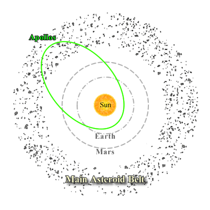

Apollo asteroids are Near Earth Asteroids (NEAs) with perihelion distances less than 1.017 AU, and semi-major axis greater than 1 AU. They have sizes less than 10 km (1866 Sisyphus is the largest discovered so far) and form the majority of the population of Earth-crossing and Potentially Hazardous asteroids.
|

Apollo asteroids have perihelion distances less than 1.017 AU and semi-major axes greater than 1AU.
|
Their expected lifetimes are relatively short (of order 10 million years) due to their potential to collide with the inner planets, which means that the population was not formed in place and must be continually replenished. Although some are no doubt extinct cometary nuclei, it is now thought that majority originate in the main asteroid belt and are ejected into their present orbits through gravitational interactions with Jupiter. The Apollo group of NEAs are named for their prototype 1862 Apollo, and there are currently over 1600 known. |